Media & press
Royal Sports Academy · Akash Kishor Shinde
The work of Royal Sports Academy and Akash Kishor Shinde has been featured across various newspapers and media publications over the years.
From karate achievements and sporting events to community initiatives and free training for children, these stories highlight a journey built around sports, discipline, opportunity and social contribution.
Explore the media gallery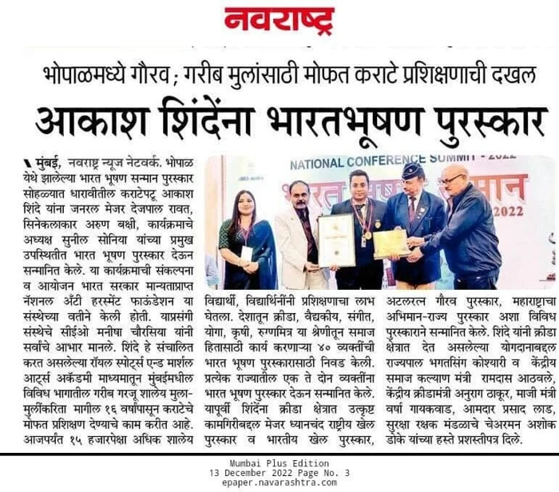
Read the featureMedia Gallery
Press Coverage • Newspaper Features • Awards • Events
Explore newspaper clippings, event photographs, recognition records and memorable moments documenting the journey of Royal Sports Academy and Akash Kishor Shinde.
Select a scan to read it. Zoom in or open the original image for small print. Photographs of events appear within several press clippings.
Original scans supplied by the academy; captions describe the visible material. Source quality varies. Duplicate copies are shown once. Documents and press wording are not independent verification of an honour’s official status.
{kind=link}
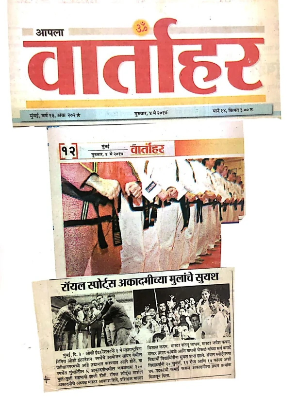
View full documentVartahar · Academy in the news
{kind=link}
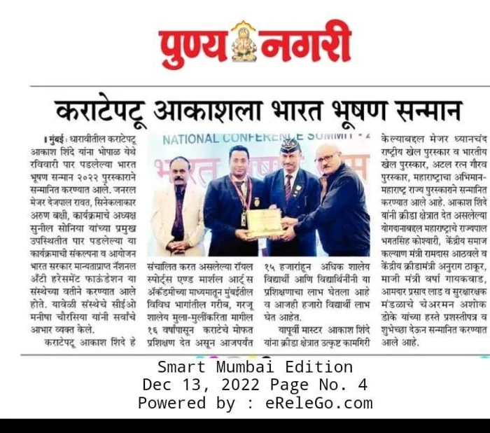
View full documentPunya Nagari · Bharat Bhushan coverage
{kind=link}
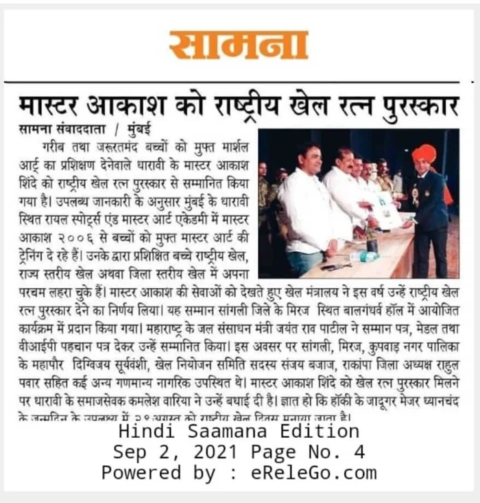
View full documentSaamana · Sports recognition feature
{kind=link}
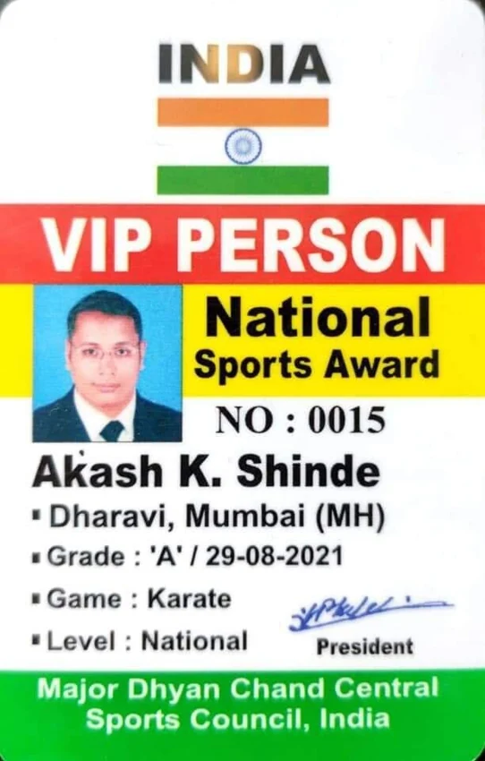
View full documentSports recognition card
{kind=link}
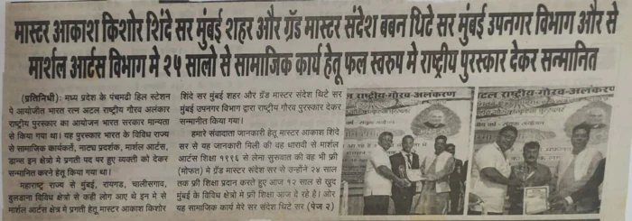
View full documentCommunity recognition · Newspaper feature
{kind=link}
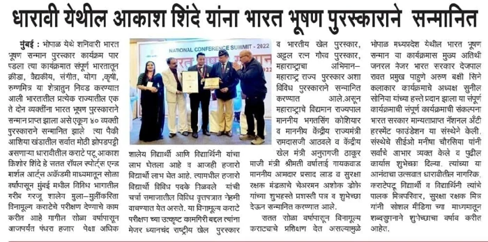
View full documentBharat Bhushan · Newspaper report
{kind=link}
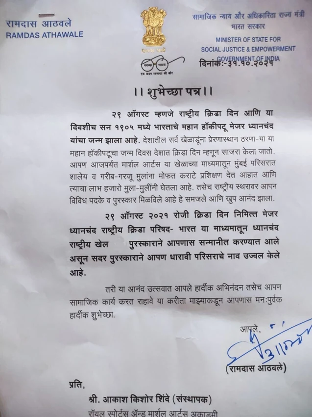
View full documentLetter of congratulations
{kind=link}
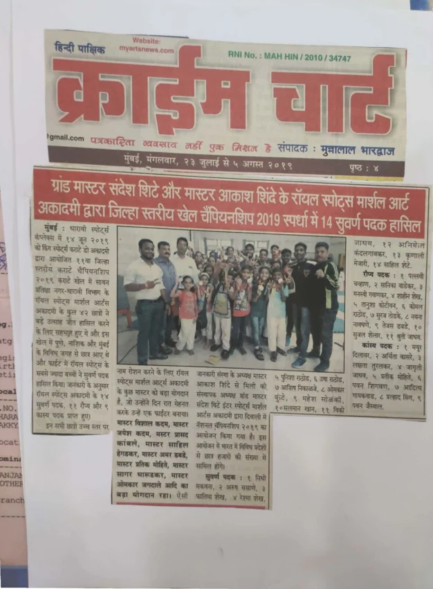
View full documentCrime Diary · Academy feature
{kind=link}
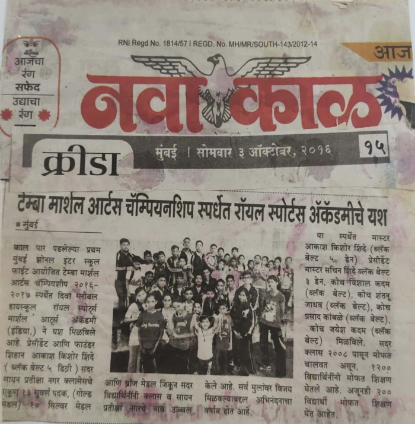
View full documentNava Kaal · Martial-arts competition coverage
{kind=link}
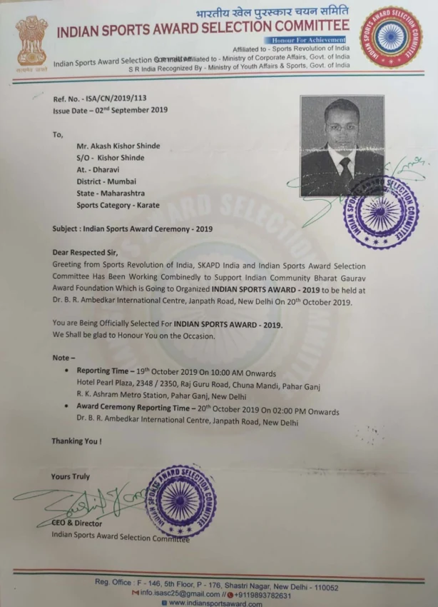
View full documentIndian Sports Award · 2019 correspondence
{kind=link}
Navarashtra · Bharat Bhushan coverage
{kind=link}
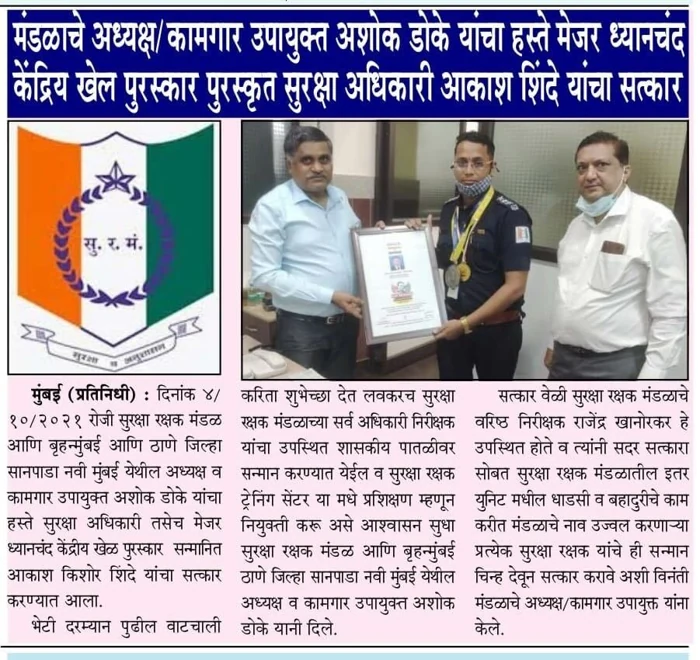
View full documentRecognition at work · Press clipping
{kind=link}
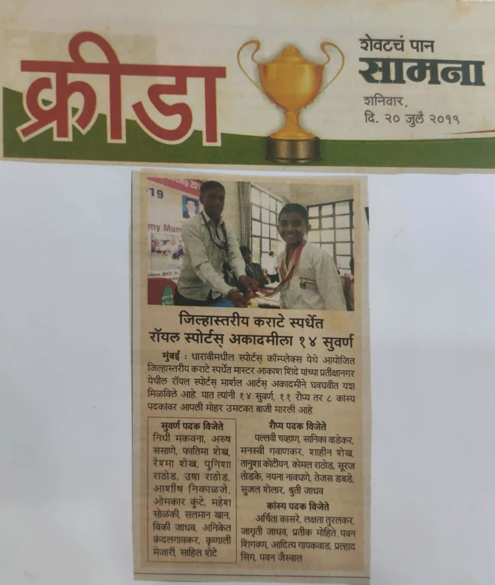
View full documentSaamana · District karate feature
{kind=link}
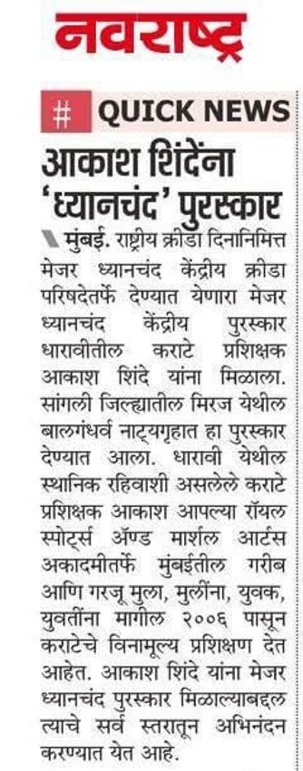
View full documentNavarashtra · Recognition news brief
{kind=link}
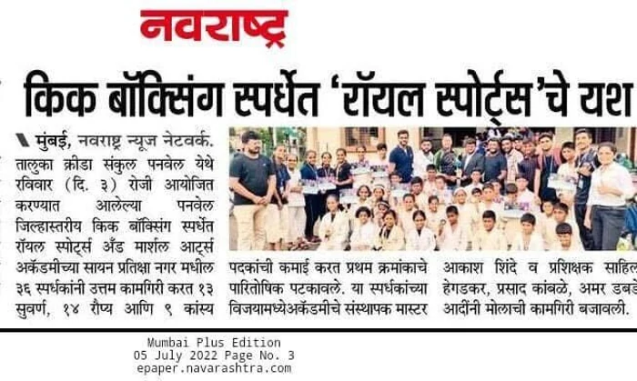
View full documentNavarashtra · Kickboxing competition feature
{kind=link}
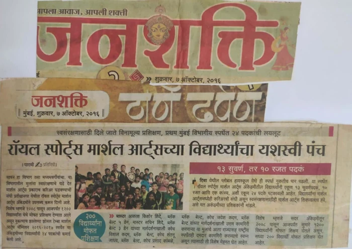
View full documentJanshakti · Academy competition coverage
{kind=link}
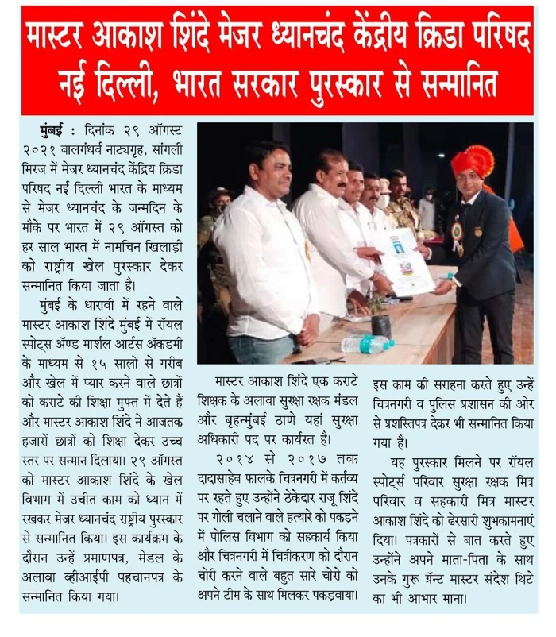
View full documentSports recognition · Hindi press report
{kind=link}
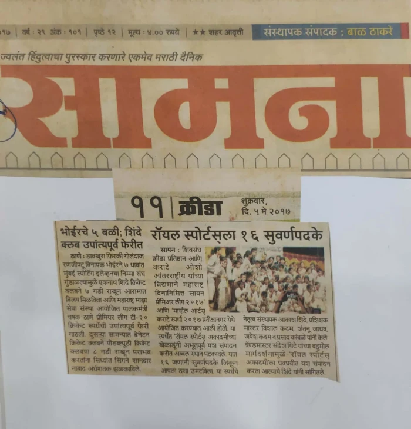
View full documentSaamana · Students in the sports pages
{kind=link}
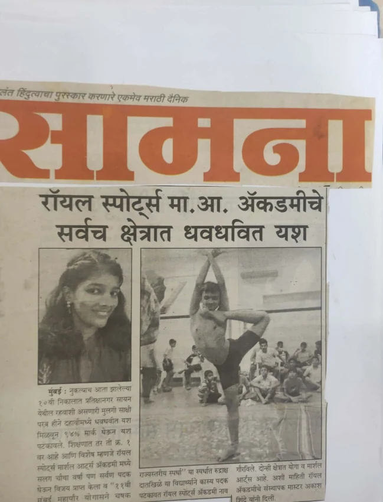
View full documentSaamana · Newspaper feature
{kind=link}
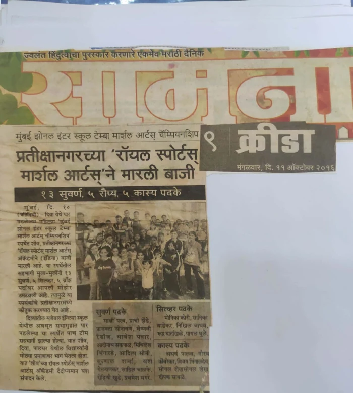
View full documentNavshakti · Sports recognition report
{kind=link}
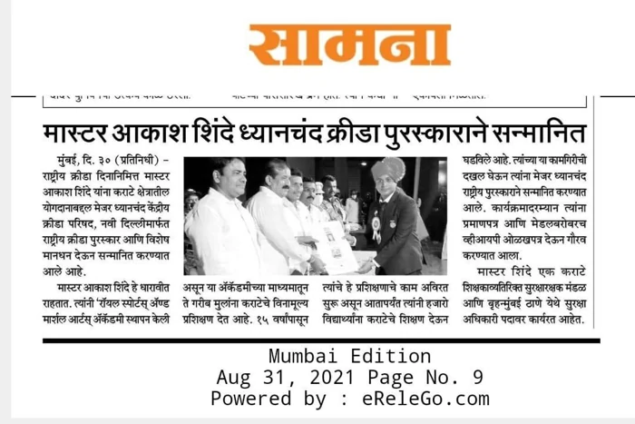
View full documentSaamana · Sports recognition news brief
{kind=link}
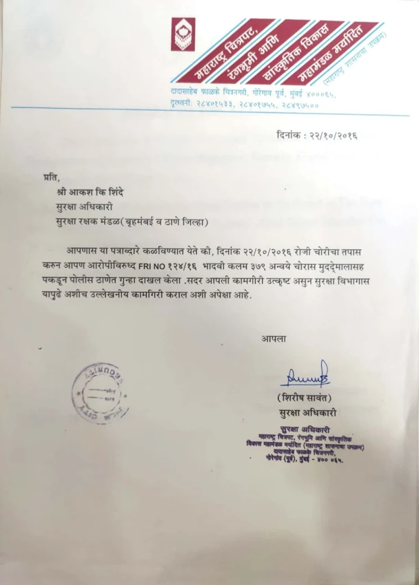
View full documentLetter of appreciation · Security service
{kind=link}
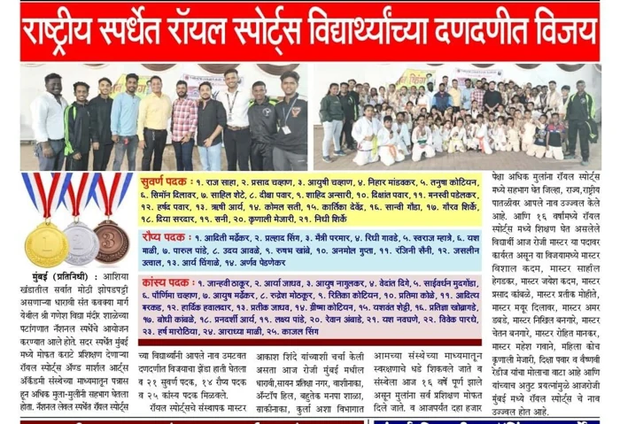
View full documentRoyal Sports · National competition report
Karate in the community
Royal Sports Academy's work has received coverage in Marathi, Hindi and regional news publications, with stories covering Akash Shinde's achievements, awards, karate journey and efforts to make training accessible to children.
Media coverage has highlighted different milestones, including:
- Free Karate Training
- Initiatives providing children with karate training without regular coaching fees.
- Sports & Karate Achievements
- Participation and recognition across karate competitions and sporting events.
- Awards & Recognition
- Coverage of honours and recognitions received from different organizations.
- Community Work
- Efforts to use karate and sports to encourage discipline, fitness and confidence among children.
- Royal Sports Academy
- Activities, students, events and the academy's continuing community-focused work.
Stories That Go Beyond Sports
For Royal Sports Academy, media recognition is not simply about appearing in a newspaper.
Every story represents the students who train, the people who support the initiative and the belief that financial circumstances should not prevent a child from getting an opportunity to learn.
The academy continues to provide 100% free karate training, with no paid regular classes, at:
- Ganesh Vidyamandir School, Dharavi, Mumbai
- Pratiksha Nagar, Mumbai
Meet the founder
Over the years, newspaper reports have documented different stages of Akash Kishor Shinde's sporting and community journey, including karate achievements and recognitions such as the Indian Sports Award 2019 and Bharat Bhushan Samman 2022, among other organizational honours.
Padma Awards 2023 · Nomination record
According to the academy's supplied account, his name also appears in the Ministry of Home Affairs' published list of nominations received for the Padma Awards 2023.
This is a nomination, not receipt of a Padma Award.
The original Ministry list is not included in this gallery and has not been independently checked for this preview.
Every feature tells a part of our story.
Every achievement inspires us to keep moving forward.